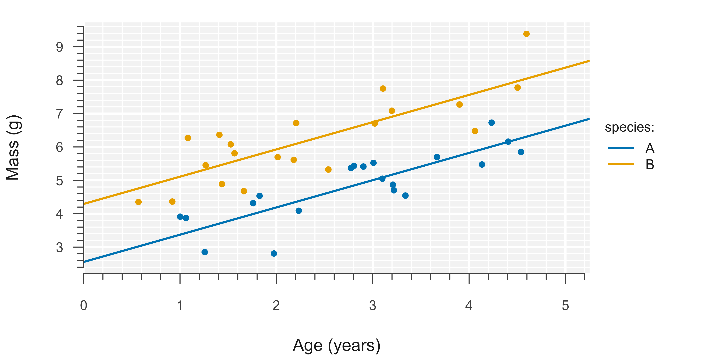
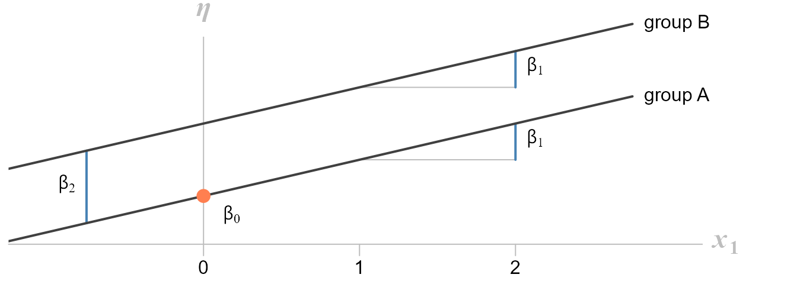
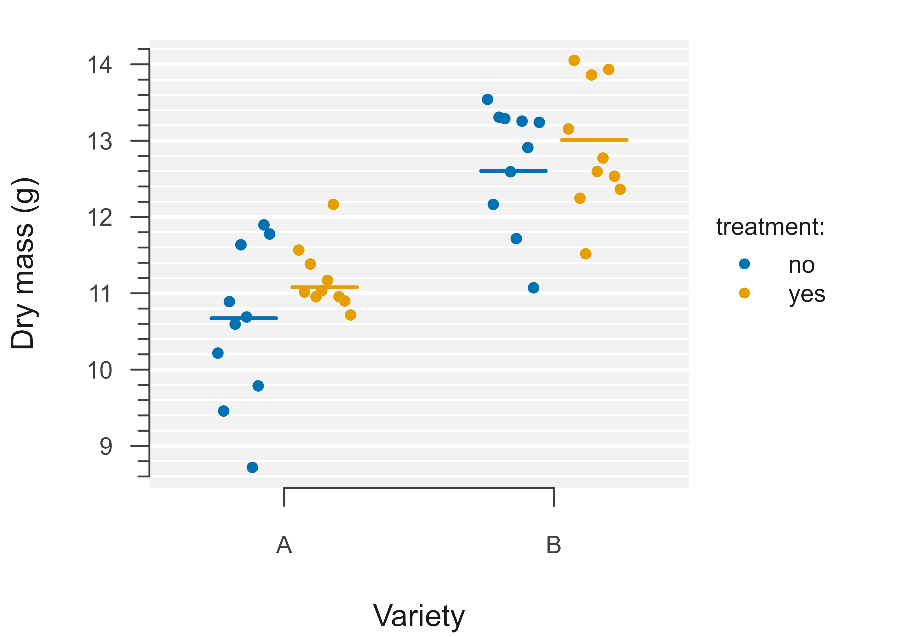
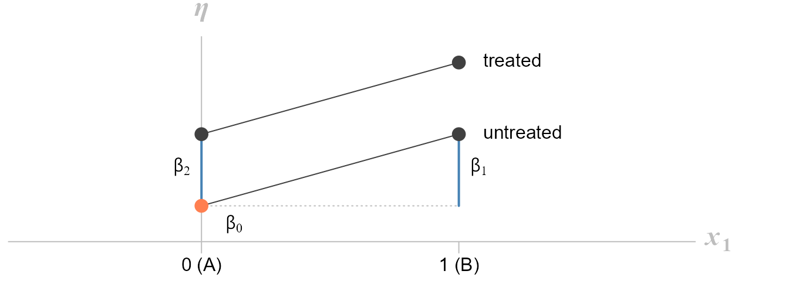
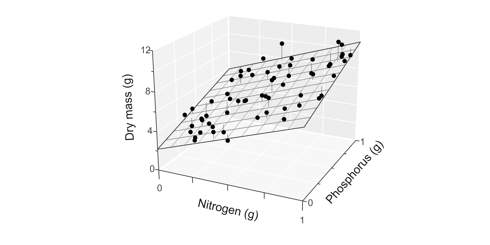
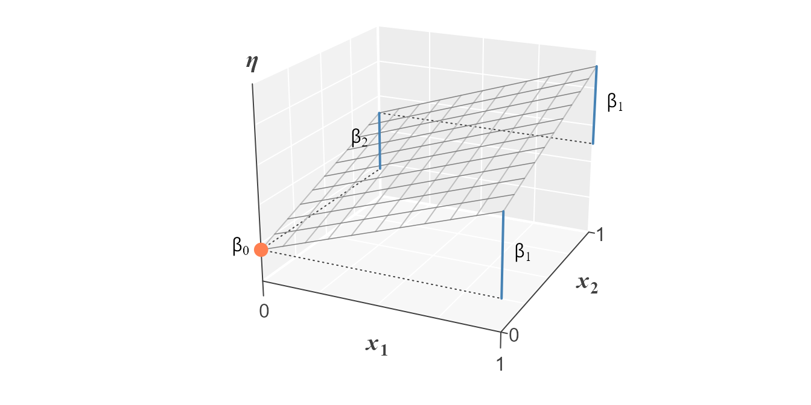

(Age and mass of 40 fish of two species.)
Linear regression with more than one explanatory variable.
I’ve recently begun restructuring the website. This chapter is under construction.
This chapter uses GLM notation for formulas (\(\eta\)), but to focus on the concept of combining explanatory variables, only normal examples are shown (lm). For Poisson and binomial examples, try the explore mode of the interactive app at the bottom.
Note: A regression model can in principle have any number of explanatory variables. This chapter only shows combinations of two variables, because that is still (relatively) easy to visualize.

Mathematical formula:
\[\begin{align} \eta &= \beta_0 + \beta_1 \cdot x_1 + \beta_2 \cdot x_2 \\ \tag{1}\label{additiveslope}\\ x_2 &=\begin{cases}1 \quad \text{if B}\\ 0 \quad \text{otherwise} \end{cases} \end{align}\]
For an ordinary linear model, \(\eta\) is simply the mean of \(y\).
Code:
model <- lm(y ~ x + group, data)import statsmodels.formula.api as smf
model = smf.ols("y ~ x + group", data).fit()The linear combination of the explanatory variables and their coefficients.
For ordinary linear models, this is just the predicted value of the outcome (\(y\)).
The variable the outcome is regressed on.
Translates the groups into a number that can be used in the formula. It works like a switch: In group B, it is on (\(x_2 = 1\)) and adds \(\beta_2\) to \(\eta\); in group A (the reference group), it is off (\(x_2 = 0\)).
Value of the linear predictor (\(\eta\)), when \(x_1\) and \(x_2\) are zero.
Here, \(x_2\) is zero in group A (the reference group), so this is \(\eta\) in group A at \(x_1 = 0\).
Change in the linear predictor (\(\eta\)), when \(x_1\) increases by one, while \(x_2\) stays the same.
Here, this change is the same in group A and group B: The lines of both groups are parallel.
Change in the linear predictor (\(\eta\)), when \(x_2\) increases by one, while \(x_1\) stays the same.
Here, \(x_2\) can only increase from \(0\) (group A) to \(1\) (group B), so this is the difference in \(\eta\) between group B and group A, at any value of \(x_1\): The distance between the parallel lines.
With a continuous variable and a dummy variable in the same model, each group gets its own line. Without interaction, both groups share a single slope, so the lines are parallel. The coefficient \(\beta_2\) is the distance between the lines:

The two lines of A and B are then defined as follows:
| Intercept | Slope | |
|---|---|---|
| A | \(\beta_0\) | \(\beta_1\) |
| B | \(\beta_0 + \beta_2\) | \(\beta_1\) |
A model with a single slope for both groups is called a main effects model. It assumes the fitted lines are parallel. If the slopes differ, see the next chapter, interaction.
Fitted to the data of Figure 4.1, the model gives the following estimates:
model <- lm(y ~ x + group, data)
summary(model)$coefficients Estimate Std. Error t value Pr(>|t|)
(Intercept) 2.5555947 0.30157250 8.474230 3.409922e-10
x 0.8164085 0.09298538 8.779966 1.404885e-10
groupB 1.7377959 0.21491229 8.086070 1.068026e-09import statsmodels.formula.api as smf
model = smf.ols("y ~ x + group", data).fit()
print(model.summary().tables[1])==============================================================================
coef std err t P>|t| [0.025 0.975]
------------------------------------------------------------------------------
Intercept 2.5556 0.302 8.474 0.000 1.945 3.167
group[T.B] 1.7378 0.215 8.086 0.000 1.302 2.173
x 0.8164 0.093 8.780 0.000 0.628 1.005
==============================================================================Note that Python names the row group[T.B], instead of groupB.
The estimated slope is given by x (0.82), and it is the same in both groups. The estimated intercept of the reference group (A) is given by (Intercept) (2.56). For group B, we have to add groupB and the intercept becomes 4.29. Apparently, this difference is significant (\(p = 1.07 \times 10^{-9}\)).
With a continuous variable in the model, the mean of a group depends on \(x\). By default, emmeans compares the groups at the average \(x\) (here 2.58):
library("emmeans")
emmeans(model, pairwise ~ group)$emmeans
group emmean SE df lower.CL upper.CL
A 4.66 0.15 37 4.36 4.97
B 6.40 0.15 37 6.10 6.70
Confidence level used: 0.95
$contrasts
contrast estimate SE df t.ratio p.value
A - B -1.74 0.215 37 -8.086 <0.0001Because the lines are parallel, the difference between the groups is the same at any value of \(x\), and equal to groupB in the regression table (emmeans shows A - B, hence the opposite sign).
For a complete analysis, refer to the tutorials at the bottom of the page.

Mathematical formula:
\[\begin{align} \eta &= \beta_0 + \beta_1 \cdot x_1 + \beta_2 \cdot x_2 \\ \tag{2}\label{additivedummy}\\ x_1 &=\begin{cases}1 \quad \text{if B}\\ 0 \quad \text{otherwise} \end{cases}\\ x_2 &= \begin{cases}1 \quad \text{if treated}\\ 0 \quad \text{otherwise} \end{cases} \end{align}\]
For an ordinary linear model, \(\eta\) is simply the mean of \(y\).
Code:
model <- lm(y ~ group + treatment, data)import statsmodels.formula.api as smf
model = smf.ols("y ~ group + treatment", data).fit()The linear combination of the explanatory variables and their coefficients.
For ordinary linear models, this is just the predicted value of the outcome (\(y\)).
Translate both categorical variables into numbers that can be used in the formula. Each works like a switch: \(x_1\) is on in group B and adds \(\beta_1\) to \(\eta\); \(x_2\) is on for treated observations and adds \(\beta_2\); for untreated observations in group A, both are off.
Value of the linear predictor (\(\eta\)), when \(x_1\) and \(x_2\) are zero.
Here, both are zero for untreated observations in group A (the reference groups), so this is \(\eta\) in untreated group A.
Change in the linear predictor (\(\eta\)), when \(x_1\) increases by one, while \(x_2\) stays the same.
Here, \(x_1\) can only increase from \(0\) (group A) to \(1\) (group B), so this is the difference in \(\eta\) between group B and group A, the same with and without treatment.
Change in the linear predictor (\(\eta\)), when \(x_2\) increases by one, while \(x_1\) stays the same.
Here, \(x_2\) can only increase from \(0\) (untreated) to \(1\) (treated), so this is the difference in \(\eta\) between treated and untreated, the same in group A and group B.
With two categorical variables in the same model, both get their own dummy variable. Without interaction, their effects simply add up: The difference between treated and untreated (\(\beta_2\)) is the same in group A and group B:

The means of the four combinations are then defined as follows:
| Untreated | Treated | |
|---|---|---|
| A | \(\beta_0\) | \(\beta_0 + \beta_2\) |
| B | \(\beta_0 + \beta_1\) | \(\beta_0 + \beta_1 + \beta_2\) |
A model in which the difference between treated and untreated is the same in both groups is called a main effects model. If that difference varies between groups, see the next chapter, interaction.
Fitted to the data of Figure 4.3, the model gives the following estimates:
model <- lm(y ~ group + treatment, data)
summary(model)$coefficients Estimate Std. Error t value Pr(>|t|)
(Intercept) 10.6729336 0.2213147 48.225135 5.271722e-35
groupB 1.9296313 0.2555523 7.550829 5.298221e-09
treatmentyes 0.4067254 0.2555523 1.591555 1.199937e-01import statsmodels.formula.api as smf
model = smf.ols("y ~ group + treatment", data).fit()
print(model.summary().tables[1])====================================================================================
coef std err t P>|t| [0.025 0.975]
------------------------------------------------------------------------------------
Intercept 10.6729 0.221 48.225 0.000 10.225 11.121
group[T.B] 1.9296 0.256 7.551 0.000 1.412 2.447
treatment[T.yes] 0.4067 0.256 1.592 0.120 -0.111 0.925
====================================================================================Note that Python names the rows group[T.B] and treatment[T.yes], instead of groupB and treatmentyes.
The estimated mean of the reference groups (untreated, group A) is given by (Intercept) (10.67). For group B, we have to add groupB (1.93), and for treated observations, treatmentyes (0.41). For treated observations in group B, we have to add both, and the mean becomes 13.01. Apparently, group B differs significantly from A (\(p = 5.30 \times 10^{-9}\)), but the treatment effect is not significant (\(p = 0.120\)).
For a complete analysis, refer to the tutorials at the bottom of the page.

Mathematical formula:
\[\begin{align} \eta &= \beta_0 + \beta_1 \cdot x_1 + \beta_2 \cdot x_2 \tag{3}\label{additiveslopeslope} \end{align}\]
For an ordinary linear model, \(\eta\) is simply the mean of \(y\).
Code:
model <- lm(y ~ x1 + x2, data)import statsmodels.formula.api as smf
model = smf.ols("y ~ x1 + x2", data).fit()The linear combination of the explanatory variables and their coefficients.
For ordinary linear models, this is just the predicted value of the outcome (\(y\)).
The variables the outcome is regressed on.
Value of the linear predictor (\(\eta\)), when \(x_1\) and \(x_2\) are zero.
Change in the linear predictor (\(\eta\)), when \(x_1\) increases by one, while \(x_2\) stays the same.
Here, this change is the same at any value of \(x_2\).
Change in the linear predictor (\(\eta\)), when \(x_2\) increases by one, while \(x_1\) stays the same.
Here, this change is the same at any value of \(x_1\).
With two continuous variables in the same model, each gets its own slope. Without interaction, the slope of one variable is the same at any value of the other. Instead of a line, the model is now a flat plane:

At a given value of \(x_2\), the model is a straight line in \(x_1\):
\[\eta = \underbrace{(\beta_0 + \beta_2 \cdot x_2)}_{\text{intercept}} + \underbrace{\beta_1}_{\text{slope}} \cdot x_1\]
| Intercept | Slope | |
|---|---|---|
| \(x_2 = 0\) | \(\beta_0\) | \(\beta_1\) |
| \(x_2 = 1\) | \(\beta_0 + \beta_2\) | \(\beta_1\) |
| \(x_2 = 2\) | \(\beta_0 + 2 \cdot \beta_2\) | \(\beta_1\) |
A model in which the slope of \(x_1\) is the same at every value of \(x_2\) is called a main effects model. If the slope changes with \(x_2\), see the next chapter, interaction.
Fitted to the data of Figure 4.5, the model gives the following estimates:
model <- lm(y ~ x1 + x2, data)
summary(model)$coefficients Estimate Std. Error t value Pr(>|t|)
(Intercept) 2.195186 0.2173984 10.09752 2.631674e-14
x1 4.866548 0.3118129 15.60727 3.064375e-22
x2 3.733792 0.3120147 11.96672 3.487701e-17import statsmodels.formula.api as smf
model = smf.ols("y ~ x1 + x2", data).fit()
print(model.summary().tables[1])==============================================================================
coef std err t P>|t| [0.025 0.975]
------------------------------------------------------------------------------
Intercept 2.1952 0.217 10.098 0.000 1.760 2.631
x1 4.8665 0.312 15.607 0.000 4.242 5.491
x2 3.7338 0.312 11.967 0.000 3.109 4.359
==============================================================================The estimated slope of x1 is 4.87: The change in the mean of \(y\) when \(x_1\) increases by one, while \(x_2\) stays the same. Likewise, the estimated slope of x2 is 3.73, while \(x_1\) stays the same. Both slopes differ significantly from zero in this case.
For a complete analysis, refer to the tutorials at the bottom of the page.
A researcher compares the mass of fish of two species and finds no significant difference (\(p = 0.31\)). After adding the age of the fish to the model, the estimated difference between the species is almost the same, but it is now significant (\(p = 0.002\)). What is the most likely explanation? (choose one)
A. Age was a confounder, so the first estimate was biased
B. Age explains much of the variation in mass, so the difference between the species is estimated more precisely
C. Adding an explanatory variable always lowers the \(p\)-values of the others
D. The species differ more in older fish
The estimate hardly changed. What else does a test statistic depend on?
A researcher compares the mass of fish of two species and finds no significant difference (\(p = 0.31\)). After adding the age of the fish to the model, the estimated difference between the species is almost the same, but it is now significant (\(p = 0.002\)). What is the most likely explanation? (choose one)
A. Age was a confounder, so the first estimate was biased
B. Age explains much of the variation in mass, so the difference between the species is estimated more precisely
C. Adding an explanatory variable always lowers the \(p\)-values of the others
D. The species differ more in older fish
A. A confounder changes the estimate itself (see omitted variable bias). Here, the estimated difference stayed almost the same.
B. The \(t\)-value is the estimate divided by its standard error. Without age in the model, the variation in mass that is due to age ends up in the residual variance, which makes the standard error large. With age in the model, the residual variance is smaller, and so is the standard error. The tutorial on a linear model shows an example.
C. It can also raise them, for example when the added variable is strongly related to another explanatory variable. And adding variables until a result is significant is not a fixed plan (see limitations of hypothesis testing).
D. That would be an interaction. This model has none: It assumes the difference between the species is the same at every age.
A binomial GLM without interaction models the probability of death of rats as a function of the concentration of a toxic gas (\(x_1\)) and sex (\(x_2\)), as in the tutorial on a binomial GLM. Which statement is correct? (choose one)
A. The difference in the probability of death between male and female rats is the same at every concentration
B. The difference in the log-odds of death between male and female rats is the same at every concentration
C. Plotted as probabilities, the curves of male and female rats are parallel
D. If the plotted curves are not parallel, the model must contain an interaction
On which scale is a GLM linear? See the formula of a binomial GLM.
A binomial GLM without interaction models the probability of death of rats as a function of the concentration of a toxic gas (\(x_1\)) and sex (\(x_2\)), as in the tutorial on a binomial GLM. Which statement is correct? (choose one)
A. The difference in the probability of death between male and female rats is the same at every concentration
B. The difference in the log-odds of death between male and female rats is the same at every concentration
C. Plotted as probabilities, the curves of male and female rats are parallel
D. If the plotted curves are not parallel, the model must contain an interaction
A. The effects add up on the scale of the linear predictor (\(\eta\)), which for a binomial GLM is the log-odds. Translated back to probabilities, the difference is not constant: In the tutorial, it is \(4.3\) percentage points at \(0\) ppm, but \(28.3\) at \(20\) ppm.
B. This is what ‘without interaction’ means in a GLM: \(\beta_2\) is added to \(\eta\) at any value of \(x_1\).
C. The lines are parallel on the scale of \(\eta\) only. As probabilities, both curves are squeezed between \(0\) and \(1\), so the distance between them changes.
D. Curves that are not parallel on the scale of the outcome are what a GLM without interaction looks like. Interaction means that the lines are not parallel on the scale of \(\eta\).
Practice the concepts covered in this chapter (the app does not include models with two continuous variables):
This app runs in your browser. The first time, your browser downloads about 50 MB, which can take a minute or more.
Now analyze a dataset yourself. Start with the worked examples, then do the exercise:
read.csv("name-of-data.csv").